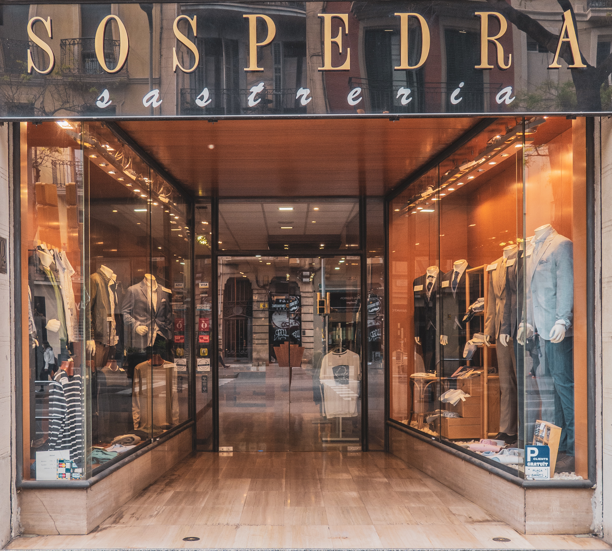

Trajes de hombre desde 1919
Desde hace más de un siglo, en Sastrería Sospedra confeccionamos trajes con el equilibrio perfecto entre tradición artesana y elegancia contemporánea.
Catálogo
¡Más prendas en tienda!
Desde 1919
Una Tradición Centenaria
En nuestra sastrería, cada prenda es única porque está pensada exclusivamente para ti. Desde la elección de los tejidos hasta el menor detalle, trabajamos para que el vestido refleje tu personalidad y estilo.
Con más de 100 años de experiencia en Barcelona, unimos tradición artesana y técnicas actuales para conseguir un resultado impecable que se adapta perfectamente a tu cuerpo ya tu forma de vivir.